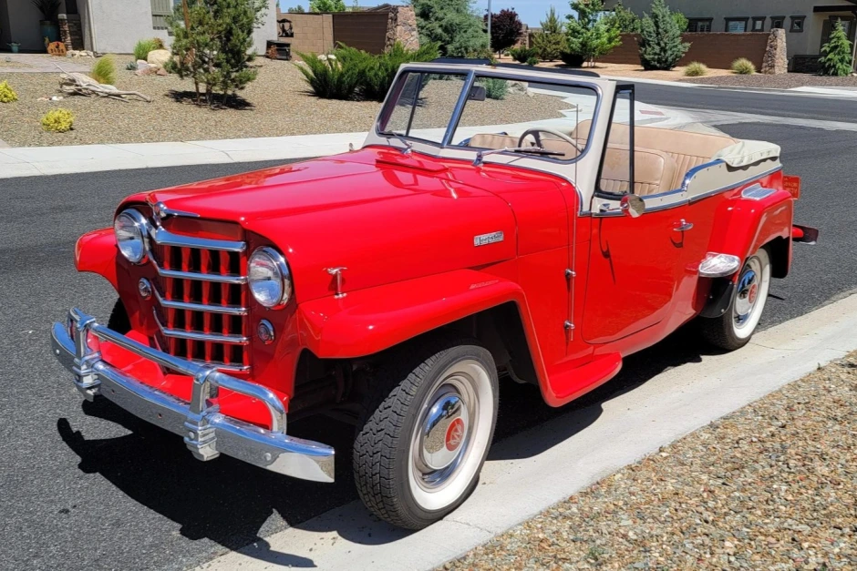

1950 Willys Jeepster
O Willys Jeepster de 1950 é um veículo esportivo utilitário produzido pela Willys-Overland, que mais tarde se tornou a Jeep. Ele foi lançado em 1948 e produzido até 1950, sendo oferecido em duas versões: conversível e com teto rígido.
O design do Jeepster de 1950 combinava elementos de um carro esportivo e um jipe. Ele apresentava uma frente arredondada com faróis proeminentes, uma grade dianteira estilizada e uma carroceria elegante e baixa. A versão conversível tinha uma capota de tecido que podia ser recolhida, enquanto a versão com teto rígido tinha uma cobertura removível que podia ser substituída por um teto de lona.
O Jeepster de 1950 era equipado com um motor de seis cilindros em linha de 2,2 litros, que produzia cerca de 72 cavalos de potência. O motor era acoplado a uma transmissão manual de três marchas. O veículo era capaz de atingir uma velocidade máxima de cerca de 120 km/h.
O interior do Jeepster de 1950 era simples e funcional. Ele apresentava bancos de vinil, um painel de instrumentos básico e uma alavanca de câmbio no assoalho. O espaço de carga era limitado, mas o banco traseiro podia ser dobrado para acomodar objetos maiores.
Embora o Jeepster de 1950 tenha sido produzido por apenas três anos, ele se tornou um carro clássico e é valorizado por colecionadores de carros antigos e entusiastas da Jeep. Sua combinação única de estilo esportivo e funcionalidade off-road o torna um modelo icônico na história da Jeep.